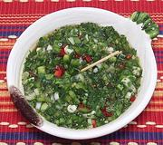

|
Aji Picante #2Colombia - Aji Picante, Aji Piqué | ||||
| Makes: Effort: Sched: DoAhead: |
1-3/4 cups ** 30 min Best |
A superb salsa. Colombian recipes feature little chili heat, but this salsa is a "must have" at the table. It is unthinkable to serve empanadas without it. See also Comments. | |||
|
------- 4 4 8 2/3 ------- 3 1/3 1/2 1/2 ar ------- |
---- c ---- T c T t ---- |
-- Vegies Chili Jalapeño (1) Aji Dulce (2) Scallions Cilantro -- Dressing Lime Juice Vinegar, white Salt Pepper, black Chili Flake (3) ----------- |
Make - (55 min - all hand cut)
|